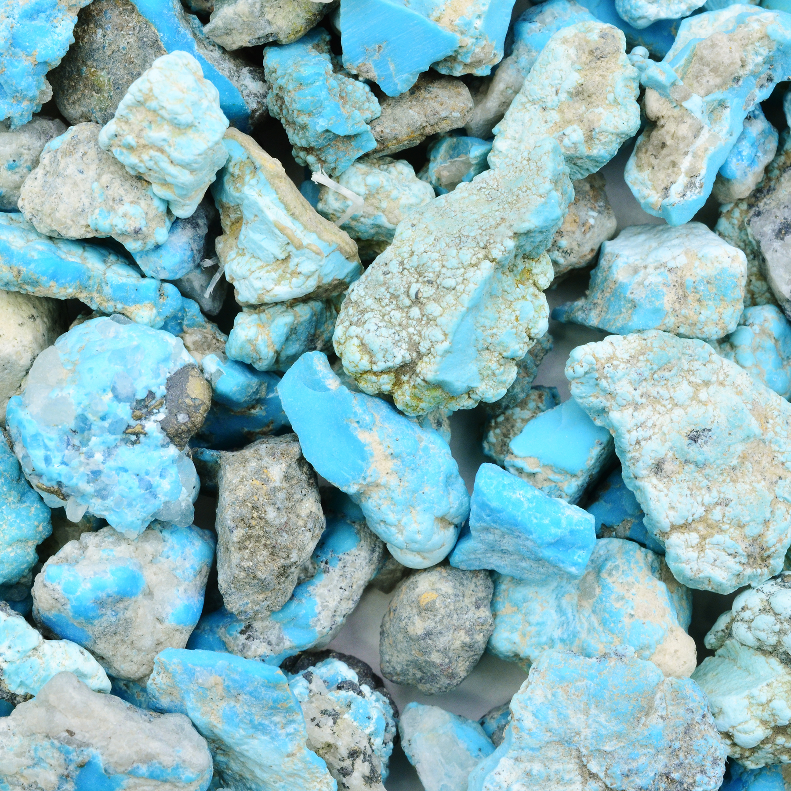
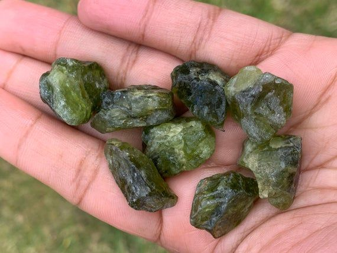
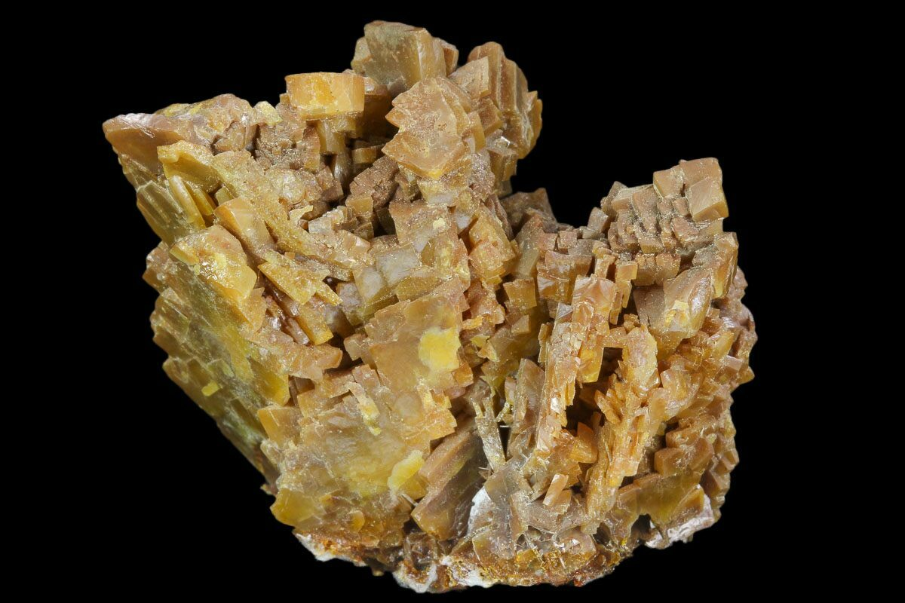
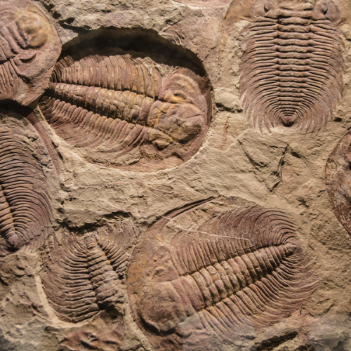
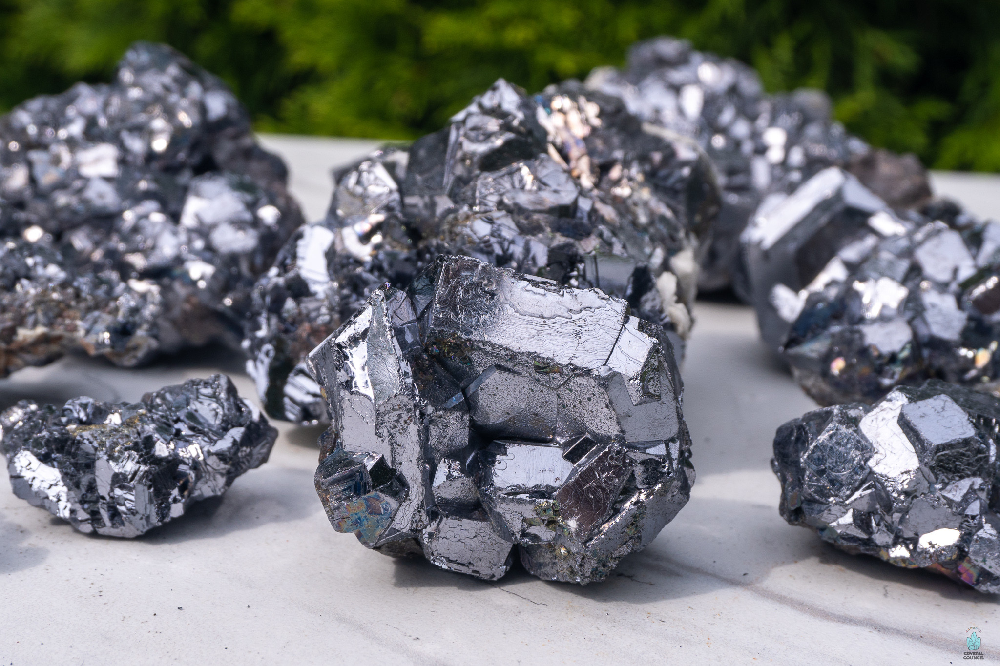

New here?

New to rockhounding and don't know where to start? Not to worry, we will show you the ropes. Click below to head over to our "Getting Started" guide
Getting StartedRocks & Minerals In New Mexico


New Mexico rockhounding maps to hunt for crystals, gemstones, minerals, and ores. New Mexico has some amazing rockhounding to offer, with its rich geological history and diverse landscapes providing a treasure trove of minerals, crystals, and fossils. Some popular areas to explore include the Rio Grande Rift, Rockhound State Park, and the tailings of the historic mining districts. Collectors can find a wide variety of specimens, such as fluorite, agate, petrified wood, and even the New Mexico state gemstone, turquoise.
Sponsored Dig Site

Own a digsite you would like to advertize in New Mexico? Contact us for more information about being our sponsor of the month! Email sponsors@rockhounding.org for more information.
Dig With UsPlease always bring appropriate attire and do research before venturing out to rock hunt and crystal hunt. Also, be sure to verify that the location you want to hunt at is available for public access. Rockhounding.org does our best to verify, but it is your responsibility to verify as well because sometimes things change. We are not liable for any actions you take from the information you find on this site.
Keeping accurate records of Rockhounding & Gemstone Hunting Locations is a community effort! Know of a good spot that is missing from our maps? Feel free to submit it below. Thank you for your contributions to the rockhounding community!
Popular Rocks, Crystals, & Gemstones In New Mexico
-

Turquoise
Turquoise is a highly prized blue-green mineral found in the Cerrillos Hills near Santa Fe.
Read More - 
-
 Fluorite
FluoriteFluorite, a colorful mineral, is found in the Bingham area within the Hansonburg Mining District.
Read More -

Wulfenite
Wulfenite, a vibrant yellow mineral, can be found in the Old Hansonburg Mining District.
Read More -
 Quartz
QuartzQuartz, a common crystal, can be found throughout New Mexico in various locations, including the Rockhound State Park.
Read More -

Trilobite Fossils
Trilobite fossils, remnants of ancient marine life, can be found in the northern part of the state near Abiquiu.
Read More -

Galena
Galena, a lead ore mineral, can be found in the Magdalena District and other mining areas of New Mexico.
Read More -
 Barite
BariteBarite, a dense mineral, is found in several locations throughout New Mexico, including the Linchburg and Harding Mines.
Read More -
 Calcite
CalciteCalcite, a common carbonate mineral, can be found in various locations in New Mexico, such as the Carlsbad Caverns.
Read More -
 Petrified Wood
Petrified WoodPetrified wood, fossilized remains of ancient trees, can be found in the Clayton Lake State Park.
Read More
Popular Rock Hunting Areas In New Mexico
-
 Rockhound State Park
Rockhound State ParkLocated near Deming, Rockhound State Park is known for its diverse collection of minerals, including agates, geodes, and jasper.
Read More -
 Linchburg Mine
Linchburg MineThe Linchburg Mine in Socorro County offers rockhounds an opportunity to find minerals like fluorite and barite.
Read More -
Harding Mine
The Harding Mine, located in Taos County, is famous for its pegmatite minerals, including beryl, tourmaline, and lepidolite.
Read More -
 Clayton Lake State Park
Clayton Lake State ParkClayton Lake State Park is a fantastic spot for fossil enthusiasts, with petrified wood and dinosaur tracks in the area.
Read More -
 Carlsbad Caverns
Carlsbad CavernsCarlsbad Caverns is a world-famous site for spelunkers and rockhounds alike, featuring stunning formations of calcite and other minerals.
Read More -
 Black Range Minerals Area
Black Range Minerals AreaThe Black Range Minerals Area in southwestern New Mexico is known for its quartz crystals, garnets, and other minerals.
Read More
Geology of New Mexico
The geology of New Mexico is a rich and diverse tapestry that spans over a billion years of Earth's history. The state's geological past includes episodes of tectonic collisions, volcanic activity, and vast inland seas that left behind a wealth of minerals, fossils, and geological formations.
New Mexico was once part of the ancient supercontinent of Rodinia, which existed more than a billion years ago. As tectonic plates shifted and reformed, the region underwent a series of geological transformations, including the formation of the Ancestral Rocky Mountains and the development of extensive sedimentary basins.
Volcanic activity has played a significant role in New Mexico's geology. The state is home to the Valles Caldera, a massive volcanic caldera formed during a series of eruptions around 1.25 million years ago. New Mexico is also home to the Jemez volcanic field and the Rio Grande Rift, a major tectonic feature extending from Colorado to Mexico.
Throughout its geological history, New Mexico has been periodically submerged under shallow seas, leaving behind extensive sedimentary rock formations and a wealth of marine fossils. The most famous example is the Kirtland Formation, which contains numerous dinosaur fossils and dates back to the Late Cretaceous period.
Today, New Mexico's geology provides a diverse landscape of mountains, plateaus, and desert plains that offer abundant opportunities for rockhounding and the discovery of a wide range of minerals, crystals, and fossils.